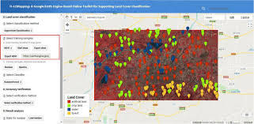
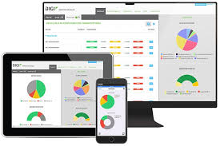
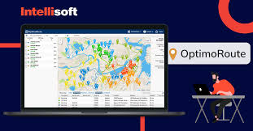
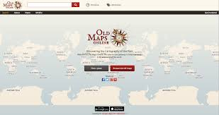

Build an interactive web dashboard for displaying spatial data
layers with Mapbox or Leaflet. Implement layer toggling, zoom, and
filter capabilities. Users can view multiple map layers, perform
searches, and analyze geographic data with charts and pop-up
information.
Automated Land Cover Classification Tool

Develop a tool that uses remote sensing and machine learning to
classify land cover types. Users can input satellite imagery, select
classification criteria, and generate thematic maps, enabling
automated, efficient land analysis and urban planning.
Real-Time Environmental Monitoring App

Create a GIS-based application that pulls real-time environmental
data, like air quality and temperature, visualizing it on an
interactive map. Integrate APIs for live data and add alert systems
for threshold breaches to monitor environmental health.
Route Optimization for Emergency Services

Design an application that calculates optimized routes for emergency
vehicles using geospatial analysis. With tools like OpenStreetMap
and routing algorithms, users can input destinations and receive
optimal routes considering traffic, hazards, and road closures.
Historical Map Comparison Web App

Develop a web app to compare historical maps with current data using
a side-by-side or swipe overlay interface. Users can view changes
over time, compare land use, or analyze urban expansion by layering
maps for visual comparison.